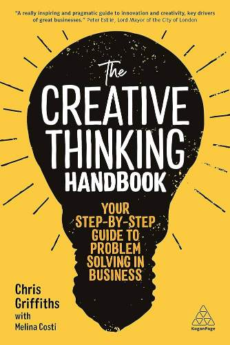

The Creative Thinking Book by Neil Francis is a guide to enhancing creativity in both personal and professional settings. The book combines inspirational stories, motivational quotes, and practical exercises to help readers unlock their creative potential and apply it in everyday life.
क्रिएटिव थिंकिंग बुक, नील फ्रांसिस द्वारा लिखित, व्यक्तिगत और पेशेवर सेटिंग्स में रचनात्मकता बढ़ाने के लिए एक मार्गदर्शिका है। यह पुस्तक प्रेरणादायक कहानियों, प्रेरक उद्धरणों, और व्यावहारिक अभ्यासों को जोड़ती है ताकि पाठकों को उनकी रचनात्मक क्षमता को अनलॉक करने और इसे दैनिक जीवन में लागू करने में मदद मिल सके।
The book emphasizes that creativity is not limited to artists or innovators; it is a skill that anyone can develop and apply in various aspects of life.
यह पुस्तक इस बात पर जोर देती है कि रचनात्मकता केवल कलाकारों या नवप्रवर्तकों तक सीमित नहीं है; यह एक कौशल है जिसे कोई भी जीवन के विभिन्न पहलुओं में विकसित और लागू कर सकता है।
Francis provides strategies to overcome mental barriers, such as fear of failure and self-doubt, that hinder creative thinking.
फ्रांसिस रचनात्मक सोच में बाधा डालने वाले मानसिक अवरोधों, जैसे असफलता का डर और आत्म-संदेह, को दूर करने के लिए रणनीतियां प्रदान करते हैं।
The book includes exercises to stimulate imagination, such as brainstorming techniques, mind mapping, and lateral thinking challenges.
यह पुस्तक कल्पना को उत्तेजित करने के लिए अभ्यास शामिल करती है, जैसे ब्रेनस्टॉर्मिंग तकनीक, माइंड मैपिंग, और पार्श्व सोच चुनौतियां।
Readers are encouraged to apply creative thinking in problem-solving, decision-making, and innovation in both personal and professional contexts.
पाठकों को व्यक्तिगत और पेशेवर संदर्भों में समस्या-समाधान, निर्णय लेने, और नवाचार में रचनात्मक सोच को लागू करने के लिए प्रोत्साहित किया जाता है।
The book features motivational quotes and real-life examples to inspire readers to embrace creativity as a way of life.
यह पुस्तक प्रेरक उद्धरणों और वास्तविक जीवन के उदाहरणों को शामिल करती है ताकि पाठकों को रचनात्मकता को जीवन के एक तरीके के रूप में अपनाने के लिए प्रेरित किया जा सके।
The book offers actionable advice for fostering a creative mindset, including tips on cultivating curiosity, embracing failure, and collaborating with others.
यह पुस्तक एक रचनात्मक मानसिकता को बढ़ावा देने के लिए व्यावहारिक सलाह प्रदान करती है, जिसमें जिज्ञासा को बढ़ावा देने, असफलता को अपनाने, और दूसरों के साथ सहयोग करने पर सुझाव शामिल हैं।
The Creative Thinking Book is an inspiring and practical guide for anyone looking to enhance their creativity and apply it in meaningful ways. It empowers readers to think outside the box and approach challenges with a fresh perspective.
क्रिएटिव थिंकिंग बुक उन सभी के लिए एक प्रेरणादायक और व्यावहारिक मार्गदर्शिका है जो अपनी रचनात्मकता को बढ़ाने और इसे सार्थक तरीकों से लागू करने की तलाश में हैं। यह पाठकों को बॉक्स के बाहर सोचने और नई दृष्टिकोण के साथ चुनौतियों का सामना करने के लिए सशक्त बनाती है।